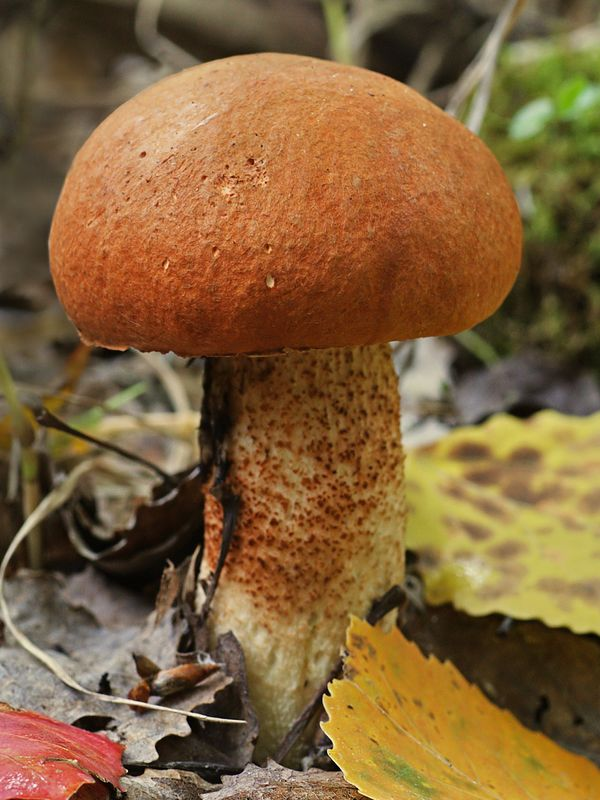

Laubwald-Rotkappe
Leccinum aurantiacum
Wenn im Ried unter Zitterpappeln ein Röhrling mit weißem Stiel und rot-braunem Hut auftaucht, handelt es sich meist um die Espen-Rotkappe. Es handelt sich hierbei um einen sehr guten Speisepilz.
Wenn im Ried unter Zitterpappeln ein Röhrling mit weißem Stiel und rot-braunem Hut auftaucht, handelt es sich meist um die Espen-Rotkappe. Es handelt sich hierbei um einen sehr guten Speisepilz.